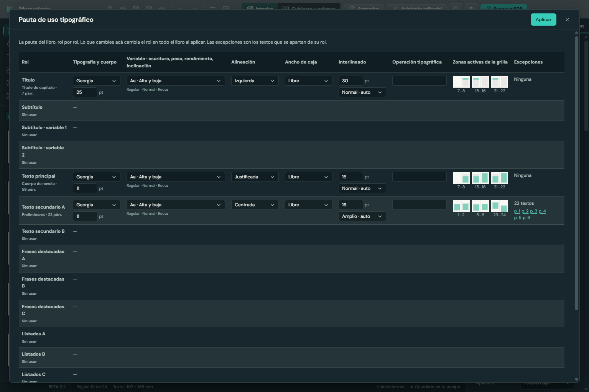
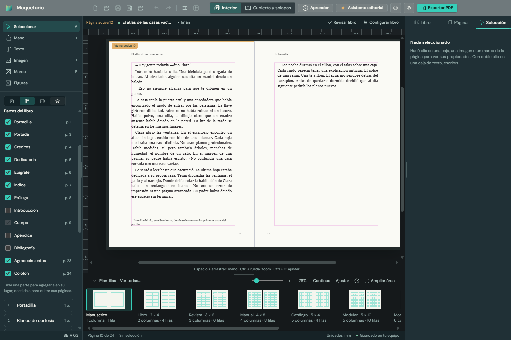

Lo que se sumó desde la BETA 0.1: el pedido de la cátedra de Tipografía I resuelto entero, con sus respuestas aplicadas. Qué probar y qué devolución nos sirve.
Para
Sebastián Poberezny
De
Juan Cruz Canteros · Tiny Studio
Fecha
9 de noviembre de 2026
Versión a probar
BETA 0.2 (instalador Maquetario BETA 0.2.exe)
Comparada con
BETA 0.1
En pocas palabras
BETA 0.2 trae los cuatro puntos que pidió la cátedra de Tipografía I (FAU-UNNE): notas al pie, roles en lugar de estilos sueltos, la pauta de uso tipográfico que se arma sola y las partes del libro, con la Cubierta y el Aprendizaje a la vista. Todo lo de la BETA 0.1 sigue igual.
Notas al pie y citas dentro del texto corrido, para las novelas que están maquetando los alumnos.
Roles con los nombres de la planilla: cambiar el Texto principal cambia todo el libro.
La pauta de uso tipográfico se arma sola mientras se diseña. Se edita y se descarga en PDF o imagen, con la leyenda y el logo de la cátedra.
Partes del libro para tildar, de la portadilla al colofón.
Cubierta y solapas, y Aprender, en la barra principal.
BETA 0.2: arriba, Interior | Cubierta y solapas y Aprender. En la página, una llamada volada y su nota al pie. A la derecha, el rol del texto (Texto principal).
Lo que pidió la cátedra
1. Notas al pie y citas
La nota se inserta donde está el cursor, con el botón "Insertar nota al pie" (Selección → Notas al pie y citas) o con Ctrl+Alt+F mientras se escribe.
En el texto queda un número volado; al pie de la caja tipográfica, un filete corto y la nota. Las notas se numeran solas, en el orden del libro.
En Libro → Notas al pie se eligen tipo de letra, cuerpo, interlineado, espacio, filete, numeración (continua, por sección o por página) y si el número al pie va volado o normal.
Copiar un texto con nota la duplica; cortarlo y pegarlo la mueve.
"Marcar como cita" le da al párrafo el estilo Cita: sangrado de los dos lados y un punto más chico.
2. Roles en lugar de estilos sueltos
Cada texto lleva un rol con los nombres de la planilla: Título, Subtítulo (y sus dos variables), Texto principal, Texto secundario A y B, Frases destacadas A, B y C, Listados A, B y C, y Otros.
Cambiar el formato de un rol cambia todos los textos que lo tienen, en todo el libro.
Si un texto se aparta de su rol, el panel lo dice y pregunta: ¿sólo acá o en todo el rol?
El ancho de caja (en columnas de la grilla) también es del rol: se aplica a todas sus cajas, y una caja con otro ancho ofrece llevarla al rol o llevar su ancho al rol.
Un libro hecho antes no cambia: si sus párrafos ya comparten un estilo (por ejemplo, "Cuerpo de novela"), ese estilo pasa a ser el del rol.
3. La pauta de uso tipográfico
Se arma sola a medida que se diseña, con las filas y las columnas de la planilla de la clase 3: tipografía y cuerpo; escritura, peso, rendimiento e inclinación; alineación; ancho de caja; interlineado (amplio, normal o ajustado, con su valor); operación tipográfica; y zonas activas de la grilla en tres dobles páginas.
Se edita ahí mismo: lo que se cambia, cambia el libro entero.
Marca las excepciones (los textos que se apartan de su rol) con las páginas para ir a verlas.
Se descarga en PDF o imagen (y en planilla CSV), con la leyenda "Pautas tipográficas" y el logo de Tipografía I.
Se abre desde la vista Estructura ("Pauta tipográfica") o desde Selección → Rol.

La pauta en el programa: una fila por rol, editable. Las filas que el libro todavía no usa quedan marcadas "Sin usar".La misma pauta descargada como imagen, lista para entregar, con la leyenda y el logo de la cátedra.
4. Partes del libro, Cubierta y Aprender
Partes del libro para tildar (vista Estructura): portadilla, portada, créditos, dedicatoria, epígrafe, índice, prólogo, introducción, cuerpo, apéndice, bibliografía, agradecimientos y colofón. Tildar agrega la parte en su lugar, con un blanco detrás para que los capítulos sigan empezando en página impar. Destildar la quita, después de confirmar.
Interior | Cubierta y solapas, en la barra principal y en la cabecera de la cubierta, para pasar de una pieza a la otra.
Aprender, siempre a la vista: tutorial guiado, glosario, una bibliografía nueva de tipografía y diseño editorial, atajos y el recorrido del libro.

Las partes del libro en la vista Estructura: la novela de ejemplo ya tiene casi todas; Introducción, Apéndice y Bibliografía se agregan tildándolas.
Las respuestas de la cátedra, aplicadas
Pregunta
Respuesta y qué hicimos
Llamada en el texto
Volada, como estaba.
Número de la nota al pie
Las dos opciones: normal o volado, en Libro → Notas al pie.
Numeración de las notas
Quedan las opciones: continua, por sección o por página.
Amplio, Normal y Ajustado
Por interlineado ÷ cuerpo: menos de 1,2 es ajustado, hasta 1,4 normal, más es amplio. Se puede elegir a mano.
Operación tipográfica
Son estilos: texto libre, más lo que se detecta solo (color aplicado, interletrado).
Logo y leyenda
Van en la pauta y en lo descargado.
Escritura y rendimiento
Alcanza. La escritura (alta y baja, mayúsculas, versalitas) ya es una propiedad del párrafo.
Otras mejoras
Revisión de toda la interfaz en notebooks de 1366 × 768 y en monitores grandes: ningún selector muestra su valor cortado y ningún botón se parte en dos líneas.
Los proyectos de la 3.20 y de la 3.24 se abren bien. Un proyecto de la 3.24 quedó como prueba fija.
Corregido: el doble clic en el tirador inferior para ajustar la caja al texto no andaba con el mouse.
Qué probar
Lo ideal es una novela real, como las que están armando los alumnos.
Instalar.Abrir Maquetario BETA 0.2.exe. La bienvenida dice "BETA 0.2".
Notas al pie.Insertar varias en distintas páginas, escribirlas, quitar una, cortar y pegar un párrafo con nota. Probar el número volado y la numeración por página.
Roles.Darle rol a los textos de un libro y cambiar el Texto principal desde la pauta: ¿cambia todo el libro?
La pauta.Abrirla, editarla y descargarla en PDF. ¿Sirve como entregable para la cátedra?
Partes del libro.Agregar y quitar partes, y ver que los capítulos sigan en página impar.
Cubierta y Aprender.Pasar de Interior a Cubierta y volver; recorrer la Bibliografía.
Un proyecto de un alumno.Abrir uno hecho con la 3.20 y ver que todo siga igual.
Qué devolución nos sirve
¿Las notas al pie resuelven lo que necesitan las novelas de los alumnos?
¿La pauta descargada sirve tal cual como entrega, o falta algo de la planilla?
¿Los roles se entienden en clase, o hace falta explicarlos en el tutorial?
¿Falta alguna parte del libro en la lista?
¿La bibliografía de Aprender es la que usa la cátedra? Si tienen la suya, la sumamos.
Lo que todavía no hace
Una nota que no entra en su página no pasa a la siguiente (no hay reflujo de texto entre cajas).
Las notas son texto simple, sin cursiva dentro de la nota.
Gracias por pasarle el pedido de la cátedra. Cualquier cosa, por el canal de siempre.
 Maquetario
Maquetario